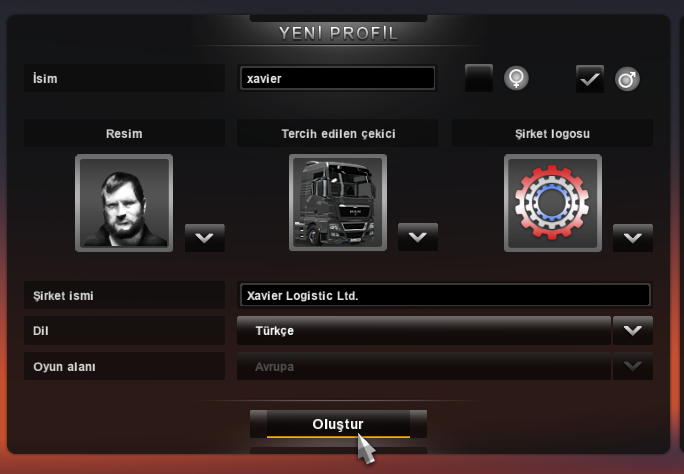

Şuraya bak. Yok GPS’miş, yok trafik kamerasıymış falan filan… Şu direksiyona bak, küçücük. Hidrolikmiş de, elektronikmiş de, pöh! Sen benim kullandığım tırların direksiyonunu bile döndüremezsin be! Ah azizim, bizim zamanımızda böyle miydi? Kâğıttan bir harita ile yol levhalarına baka baka giderdik. Arkamıza polis takılırdı. Telsizle diğer kamyoncularla konuşurduk. Hey gidi günler…
18 Wheels of Steel (18WOS)
Eksoztum dumanın
Yoktur yarim imanın
Boş yere racon kesme
Aman dağılır şanzımanın.
Uzun zaman önce tanıştığım ve çok sevdiğim bir oyun türüdür TIR simülasyonları. Aslında simülasyon oyunlarından hiç hoşlanmam. Hele de oynamak için, normal insan anatomisinden daha fazla parmak gerektiren simülasyonlardan uzak dururum. 18WOS ile oynamıştım ilk defa bu türü. Bu serileri yapan SCS Software [1] firmasının son oyunu Euro Truck Simulator 2 ile Avrupa yollarında TIR kullanıp firmaların mallarını taşıyarak başlıyor, kendi çekicimizi alıp bağımsız çalışıyor, ardındansa lojistik firmamızı kurup kendi TIR filomuzu oluşturacağımız bir kamyoncu kariyeri yapmaya çalışıyoruz.
Oyunun asgari sistem gereksinimleri:
- Intel Dual-Core 2.4 Ghz veya dengi AMD işlemci
- 2 GB RAM ana bellek
- OpenGL 2.1 destekli 256 RAM GeForce7600 ya da RadeonX1650 ekran kartı
- 2 GB disk alanı
- OpenAL destekli ses kartı.
Ekim 2012’de Windows için çıkan oyun, Nisan 2013’te ise Linux oyuncuları için çıkmıştır. Oyunu Steam üzerinden 40 dolar karşılığında satın alabilirsiniz. Oyun, şu an Linux için beta aşamasında. O yüzden Steam üzerinden baktığınızda sadece Windows sürümü olduğunu göreceksiniz. Ancak oyunu aldığınız zaman, oyunun Linux oyunları kategorisinde yerini aldığını göreceksiniz. Ancak oynamak için yapacağınız küçük bir dokunuş var. Oyunu indirip kurduğunuz zaman, listeden üzerine sağ tıklayıp, açılan menüden Özellikler -> Betalar sekmesine giderek, “Beta katılım” kısmını “linux_testing” olarak işaretleyip, “Kapat” diyerek menüyü kapatın. Oyun küçük bir güncellemnin ardından başlayacaktır. Bu adımı yapmadan açmaya kalkarsanız, “Çalıştırılabilir dosya bulunamadı” şeklinde bir hata alacaksınız ve oyun açılmayacaktır.

Oyunu ilk çalıştırdığımız zaman, önümüze bir profil oluşturma ekranı geliyor. Yukarıdaki ekran görünütüsünde de görebileceğiniz üzere, oyun tamamen Türkçe desteğine sahip. Tüm menüler, oyun içi yazılar (yol kenarındaki levhalar hariç) hepsi Türkçe. Buradan adımızı firma ismimizi, firma logosu ve dili seçiyoruz. Hayalimizdeki çekiciyi de giriyoruz, ancak oyun onu bize vermiyor ne yazık ki. :-)

Profilimizi oluşturduktan sonra bizi ana menü karşılıyor. Burası aslında oyunumuzun kontrol paneli. Çünkü iş seçiminden tutun da finansal durumumuzu, işlerimizi ve şirketimizin durumunu düzenleyeceğimiz ve takip edeceğimiz yer burası. Yani oyunun yollar kısmı dışındaki bölümü.
Sol üst köşede kendi durumumuzu görebiliyoruz. Kişisel tecrübe ve seviyemizi grafik şeklinde buradan izleyebiliyoruz. Bu kısım, bize iş veren firmaların baktığı bölüm. Beceri ve tecrübemiz ne kadar yüksekse, o kadar pahalı ve elbette zor kargoları alabiliyoruz. Tecrübemiz arttıkça seçeneklerimiz de artıyor.
Yanında ise “Beceriler” kısmı var. Buradan lisans ve yeteneklerimizi görebiliyor ve yönetebiliyoruz. Bazı yükleri götürebilmeniz için, belli bir tecrübeye ve bazı izinlere ihtiyacınız var. Bu izinler:
- ADR: Tehlikeli madde taşıma izni anlamına gelir. Seviyelerine göre, aşındırıcı, asit benzeri kimyasallardan, patlayıcılara ve silahlara kadar tehlikeli madde taşımacılığı yapabiliyoruz. Elbette madde ne kadar tehlikeliyse ve ne kadar tecrübeli sürücü istiyorsa, parası da o kadar fazla oluyor.
- Uzun Yol: Tecrübeniz arttıkça daha uzak mesafelere yük taşıma ehliyetine sahip oluyorsunuz. 250 km.den başlayarak, Avrupa’nın diğer ucuna kadar yük taşıma ehliyetine sahip olabilirsiniz.
- Değerli Yük: Pahalı kimyasallar, altın ve platin gibi kıymetli metaller ve sanat eserlerini taşıyabilmek için bu ehliyete sahip olmanız gerekir.
- Hassas Yük: Cam ve kristal eşyalar, hassas elektronik cihazlar ve otomobiller bu ehliyete sahip şoförlerin götürebileceği yüklerdir.
- Tam Zamanında Teslimat: Acil ve kısa zamanda teslim edilmesi gereken yükleri, elbette tecrübesiz şoförlere teslim etmiyorlar. Kısıtlı zaman soförü yorsa da getirisi çok iyi oluyor.
- Ekonomik Şoför: Bu, bir ehliyetten ziyade bir yetenek. İleri TIR sürüş tekniklerini öğrenerek, aracınız üzerinde daha ustalıklı bir kontrol sağlayarak, yakıt tasarrufu yapabiliyorsunuz. Eh, yakıt bedava değil sonuçta. Ne kadar az benzinle ne kadar uzağa gidebilirseniz o kadar iyi.
Hemen yanındaki “Profiller” ise, oyundan çıkmadan, oyuncu profillerimiz arasında geçiş yapmamızı sağlar.
Hemen altında ise sahip olduğumuz araçları görebileceğimiz “Aracım” kısmı mevcut. İlk oynamada burası pasif oluyor. Yani burasının açılması için, en azından bir çekiciye sahip olmanız gerekiyor. Tek araca sahipseniz sadece o aracı görebiliyorsunuz. Eğer birden fazla araca sahipseniz, aracın resmine tıklayıp, araçlarınız hakkında, kaç km. yol yaptığı, hasar durumu gibi bilgilere ulaşabilirsiniz.
Araç resminizin altında en solda bulunan “Çekici Galerileri” bölümü ile alışverişe çıkıyoruz. :-) Yük taşırken yollarda dolaşırken bir çekici galerisi önünden geçerseniz, bu galeri otomatik olarak haritanıza ekleniyor ve bu kısımdan, bulmuş olduğunuz bu çekici satıcılarını ziyaret ederek elinizdeki çekicileri satabilir, takas edebilir ya da yenilerini alabilirsiniz.
Yanındaki “Yeni Parçalar” bölümü ise, çekicinize yeni ve daha güçlü parçalar (fren tertibatı, şanzıman gibi) almanıza yarar. Aracınızın daha performanslı ve ekonomik çalışabilmesi için, bu kısımdan gerekli parçaları bulabilirsiniz.
Hemen yanında “Kabin Ayarları” bölümü var. Buradan da performans ya da ekonomi ile değil de daha çok kozmetik parçaları alıp şoför mahallinize takabilirsiniz. Yedek aynalar, güneşlikler gibi dış görünümle alakalı parçaları buradan alabilirsiniz. Hangi şoför aracının güzel görünmesini istemez ki?
En sağdaki “Teknik Rapor” kısmı ise, çekicinizin hasar durumu ile ilgili olarak, ayrıntılı bilgi alabileceğiniz bölüm. Aracınızın altında yüzde olarak genel hasar durumunu görebiliyorsunuz. Ancak hasarın nerede ve ne düzeyde olduğu, tamiri için gereken yedek parçalar ve elbette ki para miktarını buradan öğrenebiliyorsunuz. Yük taşırken, diğer araçlara ya da sağa sola çarparak kaza yapmak, çekicinizde ya da taşıdığınız yükte hasara sebep olabiliyor. Taşıdığınız yüke verdiğiniz hasar, ulaşım yerinde size verilecek paradan kesiliyor. Çekiciye verdiğiniz hasar ise, tamir ücreti olarak dönüyor. Çekiciniz farklı bölgelerden hasar alabiliyor. Eğer gövde hasarı varsa, sürüşünüze etkili olmuyor. Ancak motor, fren, şanzıman ya da kontrol ünitlerinde oluşacak hasarlar, boyutuna göre, sürüşünüzü zorlaştırıyor ya da çekicinizin olduğu yerde hareketsiz kalmasına sebep olabiliyor. Kısaca yan paneldeki orta kısmımız, para yiyici kısım olarak karşımıza çıkıyor.
Sağ panelin en altında ise “Şirket Durumu” kısmımız var. Buradan firmamızdaki araç, garaj ve çalışan sürücü sayısı ile firmamızın kasasındaki para durumunu görebiliyoruz. Burası 4 bölümden oluşuyor:
- Garaj Yönetimi
- Araç Yönetimi
- Şoför Yönetimi
- İş ve İşçi Bulma Kurumu

Buradaki “Garaj Yönetimi”kısmında, elimizde bulunan garajlar hakkında hangi araçlar ve hangi şoförlerimizin bulunduğu gibi ayrıntılı bilgilere ulaşıp bu garajlara gidebiliyoruz. Birden fazla garajınız varsa, buradan istediklerinizi kapatabilirsiniz. Ancak burada bulunan araç ve şoförlerinize, diğer garajlarınızda yer bulmanız gerekiyor. Çünkü garajlarınızın belli kapasiteleri var.
“Araç Yönetimi” kısmında da aynı garajlardaki gibi, araçlarınız hakkında detaylı bilgilere ulaşabiliyor, istediğiniz aracı kızağa çekip istediğiniz şoförlere atayabiliyorsunuz.
“Şoför yönetimi” bölümünde ise, adınıza çalışan şoförlerin ve kendinizin sürüş istatistiklerinize (ne kadar yol yapmış, ne kadar ceza yemiş, ne kadar para ödenmiş, hangi aracı kullanıyor gibi) ulaşabiliyor; buradan şoförlerinizi istediğiniz araca ya da herhangi bir firma yükleri için görevlendirebiliyorsunuz. Bir firma için görevlendirdiğiniz şoförleriniz, artık sadece belirttiğiniz firmanın yüklerini götürüyorlar. Buradan ayrıca, şoförleri işten de çıkartabiliyorsunuz.
“İş ve İşçi Bulma Kurumu” ise size yeni şoförler kazandırıyor.

Buradan daha önce geçmiş olduğunuz şehirlerde bulduğunuz işçi bulma kurumlarına giderek şoför istihdam edebiliyorsunuz. Burada bulunan şoförlerin yetenekleri hakkında bilgilere ulaşarak, istediğiniz şoförü işe alabiliyorsunuz. Ancak bu şoförlere verebileceğiniz araç ve garajlarınızda bu şoförler için yer olması gerekiyor.
“Şirket Durumu” bölümünün ikinci kısmını ise banka oluşturuyor. Burası, adında da anlaşılacağı üzere, banka hesabımızı ve kredilerimizi yönettiğimiz kısım. Maddi durumunuzu, aldıysanız kredi durumunuzu ve ödeme planlarınızı, borçlarınızı bu kısımdan görebilirsiniz. Aktif krediniz yoksa kredi de çekebilirsiniz.
Kariyer yönetimimizle ilgili kısımlarımız bunlar. Sağ panel tümüyle kariyerimizi planlamamızı sağlıyor. Yukarıda bahsettiğimiz olaylar, oldukça karmaşık gibi dursalar da aslında çok basitler. Bir strateji ya da sim (gerçi bu da simülasyon ama TIR kullanım kısmı için geçerli bu) kadar karmaşık yapıya sahip değil. Üstüne üstlük bir de Türkçe olunca anlaması oldukça kolay oluyor.
Ana menümüzdeki alt panelimiz ise oynanış ve oyun ayarlarından oluşuyor. En sağda “Nakliye Piyasası” yer alıyor. Burası işleriniz alacağınız ya da -varsa- şoförlerinizi göndereceğiniz bölüm. Firmalar, nereden, nereye ve ne götürüleceği ve işin ücreti ile ilgili bilgileri bu alana yolluyorlar. Siz de buradan yeteneklerinize uygun olan işi üstleniyorsunuz. Buraya girdiğinizde önünüze Avrupa haritası geliyor ve sağ tarafınızda da mevcut işler listeleniyor. Burada iki şekilde çalışabiliyoruz:
-
Firma şoförü olarak. Yanda listelenen işlerden yeteneğinize uygun olanı seçiyorsunuz. Listede yükün muhteviyatı, nereden nereye, ne kadar zaman içinde istendiği ve ne marka TIR ile gideceği hakkında ayrıntılı bilgiler yer alıyor. İşlerden birini üstlendiğinzde, o firmanın TIR’ının direksiyonuna geçiyor ve sadece yükü zamanında ve hasarsız olarak istenen yere ulaştırmaya çalışıyorsunuz. Yani dert yok, tasa yok tipi iş. Bu tip işte çalışırken tüm yol masraflarınız (benzin, dinlenme, trafik cezaları, paralı yol geçişleri ve hasar tamirleri) işvereninizce karşılanır. Sadece yüke vereceğiniz hasar ve teslimatta gecikme size verilecek ücretten kesilir.
-
Bağımsız şoför olarak. Yanda bu sefer, işleri treyler olarak görürsünüz. Firma şoförü gibi hazır TIR’ı almazsınız. Yükün olduğu yere kendi çekicinizle giderek yükü almanız gerekmektedir. Bu tip işte fiyat çok daha fazladır. Ancak götürü de o şekildedir. Yol masraflarınız tamamen size aittir. O yüzden bu iş tipinde kaza yapmamaya ve trafik kurallarını ihlal etmemeye daha fazla özen göstermeniz gerekiyor. Çünkü bunların parasını cebinizden vermek zorunda kalırsınız. Yine yüke vereceğiniz hasar ve gecikme de size ödenecek ücretten düşülür.
Hemen yanındanki “Dünya Haritası” kısmı ise, Avrupa haritasını açarak, iş yapabileceğimiz şehirleri gösterir. Keşfetmiş olduğunuz çekici galerileri, işçi bulma kurumları ve sahip olduğunuz garajlar, bu haritadaki şehirlerde işaretlenir. Navigasyon cihazınızı buradaki garajlarınıza da ayarlayarak çekicilerinizi bu garajlarınıza götürebilirsiniz. İş alanımıza giren toplam 12 ülkede, 79 tane şehir var. Ama ne yazık ki aralarında Türkiye yok.
Yanında ise “Radyo” kısmı bulunuyor. Uzun uzun yollarda, şoförlerin en iyi dostlarıdır radyolar. :-) Yolda gidecek gidecek, bir süre sonra da “Yahu koskoca TIR’da yok mu bir radyo birader?” diye bir soru aklınıza gelecektir mutlaka. Oyun esnasında varsayılan olarak “r” tuşu ile radyomuzu açıyoruz. Lakin radyomuz için gereken ayarları buradan yapıyoruz. Öncelikle belirteyim ki canlı radyo kısmı oyunun Linux sürümü için çalışmıyor. Ben çalıştıramadım ve SCS forumlarında güncelleme gerektiği sonucuna ulaştım. Şöyle ki bu bölüme girdiğinizde, solda bir müzik çalar, sağda ise radyo kısmı göreceksiniz. Radyo kısmı için, alt ortada bulunan “İnternet’ten güncelle“ düğmesine bastığınızda, önünüze pek çok radyo istasyonu gelecektir. Ancak ne yazık ki kodek desteği eksikliği yüzünden, İnternet’ten yayın yapan bu radyoları dinleyemeyeceksiniz. Bu özelliği kullanabilmemiz için artık, oyunun güncellenmesini beklemek durumundayız. Radyo listemiz ise ev dizininiz altındaki ~/.local/share/Euro Truck Simulator 2 dizini altındaki live_streams.sii dosyası içinde bulunuyor. İnternet yayını yaptığını bildiğiniz radyo istasyonlarının web adreslerini, bu dosyayı yapılandırarak ekleyebiliyorsunuz. Diğer kısımda ise müzik çalarımız var. Ancak kodek desteği eksikliği burada da karşımıza çıkıyor. Yine dinlemek istediğiniz müzik dosyalarınızı ev dizinimiz altındaki ~/.local/share/Euro Truck Simulator 2/music dizini altına atarak oyuna gösterebiliyoruz. Ama ne yazık ki SCS, mp3 kodekleri için gereken lisanslara sahip değil. Windows sürümü DirectShow kullandığı için sorun olmuyor ancak Linux için bu kadar kolay değil ne yazık ki. Ancak dinlemek istediğiniz müziklerinizi özgür format olan *.OGG biçimine çevirerek bu dizine attığınızda, ETS2 içinde bu müziklerinizi dinleyebiliyorsunuz. Ya da hiç uğraşmadan, “Ayarlar” kısmından oyunun müziklerini kapatın ve arka planda müzik oynatma uygulamanızı açıp oyunu öyle başlatın. En kısa yol. :-)
“E-Posta” kısmı, size gelen e-postaları okumanızı sağlar. Genelde çekici galerileri ve bankadan gelen e-postalar işinize yarayacak bilgiler içerir. Kredi ödeme hatırlatmaları, yeni gelmiş parça ve aksesuarlar, iş teklifleri gibi e-postaları oyun boyunca alacaksınız. Firmanız geliştikçe de “Şu şoförünüz şurada yolda kaldı.”, “Kamyonlarınızdan biri şurada kaza yaptı.” şeklinde sinir bozucu olanlar da gelmeye başlayacak.
Sağda da oyun ile ilgili ayarların bulunduğu panel var. “Kaydet ve Yükle” oyunu kaydedip yüklemeye yarar. İş ortasında ya da ana menüde hiç fark etmeksizin kaydedebilirsiniz. Yüklediğinizde kaldığınız yerden devam edebilirsiniz. “Ayarlar “ kısmı oyunun kontrollerini, ses ve görüntü ayarlarını yapmanızı sağlar. Tipik performans, tuş takımı, sesler ve müzik ayarları var. Hepsi gayet açık. Belirtmek istediğim oyun, Joypad ve yarış kontrol seti (direksiyon ve pedal) desteğine sahip. “Emeği geçenler” SCS tayfasını listelerken; “Çıkış” da oyunu kapatır. En soldaki “Sür” düğmesi ise, bizi asıl oyuna götürür. Yani TIR’ın şoför mahalline.

Şimdiye kadar yaptıklarımız hepsi işte burası içindi. İlk defa oyuna başlayıp da direksiyona geçtiğinizde, oyun size, eğitim görevini isteyip istemediğiniz soracaktır. Tavsiyem eğitim görevini alın. Oldukça kolay bir taşıma alacaksınız. Aynı şehir içinde 3-5 km. Uzaklıkta bir alan bir konteyner götürmeniz istenecek. Oyun bu taşımanız boyunca, size ekranı ve TIR kontrolleriniz tanıtan bir dizi mesaj ile yardımcı olacak.
Oyunun önemli kısımları da burada zaten. TIR’ın tüm kontrollerini bilmeseniz de olur, ama en azından farlarınızı yakmayı ve sileceklerinizi çalıştırmayı bilin. Bu tuşları ayarlar kısmından görebilirsiniz. Oyuna başlarken, bir kontrol sihirbazı başlayacaktır. Buradan vites tipinizi seçebilir ve kontrol biriminizi atayabilirsiniz. Vitesi otomatik seçin. Nasıl olsa bir yarış oyununda değilsiniz. Standart bir bilgisayar için kontrol birimi seçenekleriniz klavye ile klavye+fare birimleri. Klavye+fare ikilisi kontrolü, alışkın olmayanlar için biraz zor. Aracın kontrolü fareye geçiyor ve direksiyonu fare ile kontrol ediyorsunuz. Çok daha hassas bir kontrol sağlasa da pek gerekli değil. Tavsiyem, basit otomatik vites + sadece klavye kontrol birimini kullanmanız. Sebebi de basit. Oyun bir yarış oyunu olmadığı için sürat yapmak gibi bir derdimiz yok. O yüzden performans yerine sürüş kolaylığı sağlayacak bir vites daha avantajlı olacaktır. Ayrıca araba vitesi ile TIR vitesi aynı değil. Kontrol birimini sadece klavye olarak seçerseniz, TIR’ın tüm kontrolleri klavyede olacak, fare ile de kabin içinde bakınabileceğiz.
TIR’ımızda pek çok fonksiyon mevcut ama bunarın çoğunu kullanmayabiliyoruz. Ben şahsen sadece hız sabitleyiciyi, sinyalleri, farları ve silecekleri kullanıyorum. Bunların yerlerini “Ayarlar” kısmından değiştirebilir ya da varsayılan tuşları buradan görebilirsiniz.
Oyundaki en can alıcı kısım yol asistanımız. Ekranın sağ alt kısmında, başta GPS olmak üzere, yerimiz, aldığımız işin detayları, yorgunluk seviyesi, benzin durumu, TIR’ın hasar durumu gibi pek çok bilgi özetine ulaşabileceğimiz aracımız. Yani çekicinin kendisinden sonra, en kullanışlı araç. Yol asistanını isterseniz F3 ile kapatabilirsiniz, ama hiç tavsiye edeceğim bir şey değil. Bu aleti, F5-F8 arası tuşlar ile kontrol edebiliyoruz. F5, bize konum ve araç durum bilgisi gösteriyor. Yani GPS. Ana menüden, kendi çekiciniz varken aldığınız işleri ya da garajlarınıza gideceğinizde, yolda sizi oralara yönlendirecek olan cihaz. Bu kısımda ayrıca hızınızı, aracın genel hasar durmunu, benzin miktarınızı ve yorgunluğunuzu da üst kısımda görebiliyorsunuz.
F6 tuşu, mevcut işimizin detaylarını görmemizi sağlıyor. Taşıdığımız yük, ağırlığı, gideceği yer, teslimat için kalan zaman, yola çıktığımızdan beri geçen zaman gibi ayrıntıları buradan okuyabiliyoruz. Burada eğer “Enter” tuşuna basacak olursanız, aldığnız işi bırakırsınız. Kariyeriniz için pek tavsiye edebileceğim bir şey değil. Para kaybetmek bir yana, güven de yitirirsiniz.
F7 tuşu ise hasar durumu ve yol yardımı bölümünü açar. Yol asistanının üst kısmında çekici şeklinde bir hasar göstergesi göreceksiniz. Ancak hasarın çekicide mi, yoksa yükte mi olduğunu yol asistanınızdan görebiliyorsunuz. Bu kısımda yine, “Enter” tuşuna basacak olursanız, yol yardımını arayarak, sizi ve yükünüzü en yakın şehirdeki teknik servis noktasına götürmelerini sağlarsınız. Elbette ki bu size bir miktar paraya, rotadan çıkmanıza ve bir hayli zaman kaybetmenize sebep olur. Yine de TIR’ın yoldan çıkıp devrilmesi, ücra bir şehirlerarası yolda benzinin bitmesi ya da çekicinin motor arızası verip durması gibi durumlarda mecbur kalıyorsunuz.
F8 ise kısa mesajlarınızı okumanızı sağlar. E-postanız değil buradaki mesajlar. E-posta geldiği zaman, yol asistanının üst kısmında bulunan zarf, sarı renge dönerek bildirimde bulunur. Gelen e-postanızı ana menüden okuyabilirsiniz.
Oyunun kontrolleri bu şekilde. Biraz da oynanıştan bahsedecek olursak, kariyer kısmı güzel yapılandırılmış. Oldukça zengin bir yönetim yelpazesi üzerinde, banka kredileri gibi ayrıntılar eklenerek, oldukça gerçekçi bir yapı oluşturulmuş. Ancak elbette, bir simülasyon oyunu, aracın şoför mahalline geçince başlar. Varsayılan olarak, sürücünün gözünden etrafı görüyoruz. Ancak birçok farklı kamera açısı da mevcut. TIR’ın tepesinden burnundan, üstten kuşbakışı gibi kameraların yanı sıra tekerin dibinden ve yolun taa öbür ucundan gören absürt kamera açıları da var. Ben gerçekçilik açısından gözden görünüş açısı ile oynuyorum. Ancak bazen kuşbakışı kamerası da yardıma yetişiyor. Mesela İngiltere’ye geçerken, gireceğiniz Manş Tüneli’nde, TIR’ı trene yerleştirmek ölüm.
Oynanış olarak ise, etkileşimi oldukça az buldum. Öncelikle trafikteki diğer araçlar, robot gibi davranıyorlar. Trafik kurallarına uyarak gidiyorlar sadece. Mesela 18WOS ilk oyununu oynadığım zamanlarda, bir arabanın arkasına takılıp da kornaya uzunca bir süre basınca, diğer araba karşılık veriyordu. :-) ETS2’de ise yok. Hatta çok aradığım özellik, 18WOS’ta aracınıza bir telsiz takdığınızda, diğer TIR şoförleri ile konuşabiliyordunuz. Karşıdan gelen bir TIR şoförüne, yolun ilerisinde kaza, hava durumu ve polis gibi unsurları sorup yol durumu hakkında bilgi alabiliyordunuz. Hatta telsiz olmasa bile karşıdan gelen TIR’a selektör yapıp, korna çaldığınızda size yanıt veriyordu. Bu ETS2’de ise bu olay yok. Kendimi oldukça yalnız hissettim oyunda.
Oyunda trafik kurallarına riayet etmeniz bir başka unsur. 18WOS’ta, polis otoları ve radarlar vardı. Ancak bu oyunda kameralar olduğundan herhangi bir yerde kural ihlalinde, anında ceza yiyiveriyorsunuz. Ceza yememek için dikkat etmeniz gerekenler, hız limitini aşmamak (yol kenarlarındaki levhalardan görebilirsiniz), saat 19:00’dan sonra farlarınızı yakmak, ağırlık kontrol merkezlerini pas geçmemek, kaza yapmamak ya da sebep olmamaktır.
Grafik kalitesi ve oyun motoru oldukça başarılı. Oyunda grafik ya da seslerden kaynaklanan bir hata yok. Sadece radyo kısmımız şimdilik çalışmıyor. Eh oyuncu penguenler, haydi basın gaza. İlk mola yeri Münih asfaltındaki kamyoncu lokantası.

Kaynak:
[1] http://www.scssoft.com/